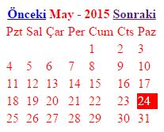

Calendar(Takvim) Kütüphanesi
Takvim oluşturmak ve üzerinde değişiklik yapabilmek için oluşturulmuştur. Kod üzerinden takvim ayarlarını yapılandırabileceğiniz gibi Config/Components.php ayar dosyasından da yapılandırmaları gerçekleştirebilirsiniz.
| Calendar(Takvim) Kütüphanesi ve Yöntemleri | |
|---|---|
| URI Bağlantısı Sağlamak | Calendar::url() |
| İsimlerin Kısalığını ve Uzunluğunu Belirlemek | Calendar::nameType() |
| İleri Geri Linklerini İsimlendirmek | Calendar::linkNames() |
| Takvim Nesnesini Oluşturmak | Calendar::create() |
| Takvim Nesnesine Stil Uygulamak | Calendar::style() |
| Takvim Nesnesine Css Sınıflarını Uygulamak | Calendar::css() |
// http://www.ornek.xxx/anasayfa/index/takvim/2015/01 echo Calendar::url('anasayfa/index/takvim' )// Gün ve ay isimleri kısaltılmış halleri ile kullanılsın. // Kullanımı zorunlu değildir. Varsayılan: 1.p(gün)sort, 2.p(ay)long ->nameType('short' ,'short' )// Tablo geneline ve şimdiki gün hücrelerine stil uygulanıyor. // Kullanımı zorunlu değildir ->style(array ('current' =>'background:red; color:white;' ,'table' =>'background:white; color:red' ))// İleri geri linklerine isim veriliyor. // Kullanımı zorunlu değildir. Varsayılan: 1.p(önceki) ->linkNames(< < , 2.p(sonraki))> > 'Önceki' ,'Sonraki' )// Takvimi oluşturmak için kullanılan niahi yöntemdir. ->create();

| Sınıf ve Stil Uygulanabilir Anahtar Kelimeler | Etkilenen Kısımlar |
|---|---|
| current | Takvimde yer alan atif güne yani şuanki zaman hücredir. |
| days | Takvimde yer alan gün(sayı) hücrelerdir. |
| dayName | Gün isimlerinin yer aldığı hücrelerdir. |
| monthName | Ayın ve Tarihin yer aldığı hücrelerdir. |
| links | İleri ve geri linklerine uygulanacak stil ve sınıflar için kullanılan anahtardır. |
| table | Tablonun genelin ifade eder. Bu anahtarla uygulayacağınız stil veya sınıflardan takvim nesnesinin tüm elemanaları etkilenir. |
Yukarıda kodların çıktısı olan takvim görüntüsü yer almaktadır. Gerekli css veya stil kodları kullanılarak çok daha güzel takvimler oluşturabilirsiniz.